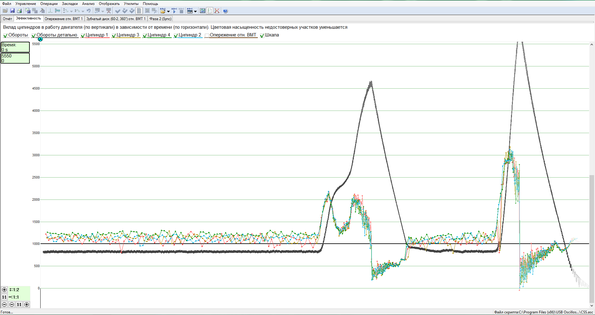
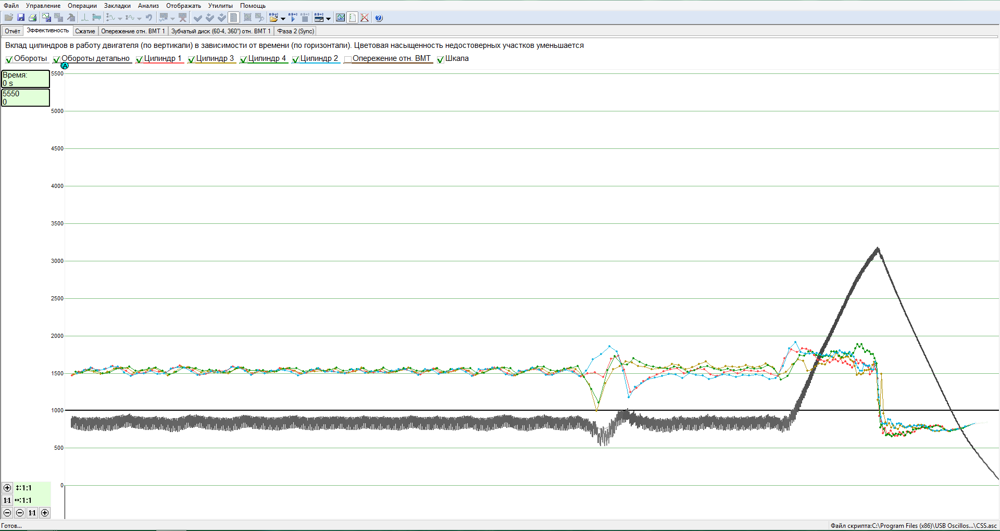

Цены
Вы можете скачать цены на услуги автосервиса: PDF
Или Читать дальше:
Ниже приведены приблизительные цены за работу для общей информации, чтобы получить представление о ценах. Поскольку автомобили имеют различия в конструкции, а также возможно выявление дополнительных дефектов, точные цены для каждого автомобиля указать невозможно.
Читать дальше:
Описание услуг

Диагностика и ремонт бензиновых двигателей
Диагностика выхлопных газов с помощью газоанализатора Bosch BEA850.
Проведя анализ состава четырех газов (CO, CO2, CH, O2 и lamda), можно оценить работу системы управления двигателем, ресурс катализатора и соответствие выхлопных газов требованиям технического осмотра.
Компьютерная диагностика с помощью сканера. С помощью сканера можно считать накопленные ошибки в электронном блоке управления двигателем, сбросить ошибки, считать показания датчиков при работе двигателя, адаптировать необходимые исполнительные механизмы, кодирование электронных блоков управления.
Диагностика двигателя с помощью автомобильного осциллографа (мотортестера).
Индивидуальное тестирование датчиков и исполнительных механизмов двигателя.
Диагностика зажигания по осциллограмме искры.

Скрипт CSS для проверки работы двигателя. Позволяет оценить и сравнить производительность каждого цилиндра во всем диапазоне нагрузки и оборотов двигателя. Этот тест используется для выявления причин неравномерной работы двигателя. Оцениваются подготовка топливной смеси и характеристики зажигания индивидуально в каждом цилиндре.

Скрипт Px для проверки механического состояния и износа двигателя. Позволяет оценить работу газораспределительных механизмов двигателя, угол опережения зажигания во всем диапазоне нагрузок и скоростей, сопротивление, создаваемое выхлопной системой. Этот тест используется для определения возможных механических причин потери мощности двигателя

Проверка и ультразвуковая очистка топливных форсунок на стенде.
Испытательный стенд CarbonZapp GS2. Multi port (MPI), прямой впрыск (GDI, FSI, TSI), моно-мотроник, KE jetronic.
Обслуживание двигателя, подготовка к техническому осмотру.
Замена ремня ГРМ или цепи газораспределительного механизма.

Диагностика и ремонт дизельных двигателей
Измерение коэффициента дымности выхлопных газов с помощью газоанализатора Bosch BEA850.
Компьютерная диагностика с помощью сканера. С помощью сканера можно считать накопленные ошибки в электронном блоке управления двигателем, сбросить ошибки, считать показания датчиков при работе двигателя, адаптировать необходимые исполнительные механизмы, кодируя электронный блок управления.
Диагностика двигателя с помощью автомобильного осциллографа (мотортестера).
Индивидуальное тестирование датчиков и исполнительных механизмов двигателя.
Скрипт CSS для проверки работы двигателя. Позволяет оценить и сравнить производительность каждого цилиндра во всем диапазоне нагрузки и оборотов двигателя. Этот тест используется для выявления причин неисправности двигателя. Подготовка топливной смеси и динамическое сжатие в каждом цилиндре оценивается индивидуально.

Обслуживание двигателя, подготовка к техническому осмотру.
Замена ремня ГРМ или цепи газораспределительного механизма.
Диагностика и ремонт электросистем
Оценка силовой электросистемы (аккумулятор, стартер, генератор).
Диагностика проводится с помощью автомобильного осциллографа (мотортестера), скрипт ElPower.
Быстрая и качественная оценка технического состояния аккумуляторной батареи, стартера и генератора, без снятия компонентов.

Обследование и ремонт различных электрических систем, подготовка к техническому осмотру.
Диагностика и ремонт ходовой части
Ремонт механизма подвески. Замена рычагов, сайлентблоков, шарниров, пружин, амортизаторов.
Ремонт рулевого механизма. Диагностика и ремонт системы SAS, адаптация датчика рулевого колеса.
Регулировка геометрии колес на стенде.

Диагностика и ремонт тормозной системы
Ремонт тормозной системы.
Диагностика и ремонт систем ABS, ESP.
Диагностика и ремонт систем электронных стояночных тормозов EPB.